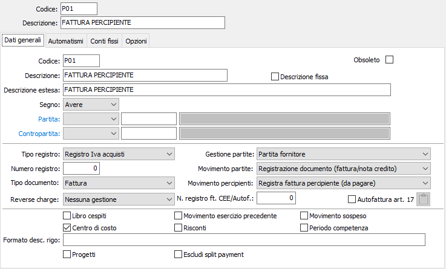
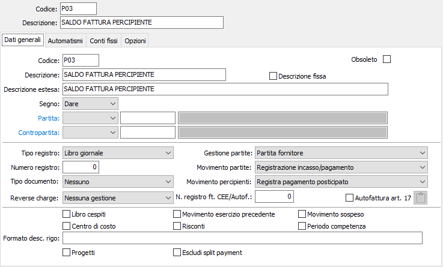

Introduzione
La procedura gestisce i rapporti fra l’azienda e i percipienti, per i quali l’azienda stessa costituisce sostituto d’imposta.
Per la gestione dei versamenti delle ritenute sia a titolo IRPEF che INPS che INAIL il momento impositivo è dato dal pagamento della fattura/parcella del percipiente; in tale fase nasce il debito dell’azienda verso l’Erario.
La registrazione del pagamento tuttavia è spesso legato ad un documento già registrato al cui interno sono contenuti tutti gli elementi necessari per il corretto calcolo delle ritenute da versare.
L’applicazione tiene in debita considerazione tale aspetto e pertanto a livello di causali contabili sono previsti quattro casi distinti di movimentazione dell’archivio percipienti.

Registrazione di documento da pagare: il movimento nasce completo di estremi del documento, ma privo della data di pagamento al percipiente; pertanto non è valido ai fini IRPEF e INPS, e lo diventerà solo al momento del pagamento del percipiente. Ai fini della gestione partite è la registrazione di un documento.
Registrazione di documento già pagato: è il caso in cui perviene la parcella definitiva. L’evento di per se non è significativo per i compensi a terzi, perché il rigo era nato al momento del pagamento anticipato del percipiente ed era completo ai fini della gestione. Tutt’al più la gestione di questo evento permette di compilare i campi numero documento e data documento, ma si tratta di un fatto del tutto irrilevante ai fini IRPEF, INPS e INAIL.

Pagamento posticipato: all’interno dell’archivio movimenti percipienti esiste già un movimento di registrazione documento. La fase di registrazione permette di visualizzare (modificandole) le informazioni già registrate e inserendo la data di pagamento. Ai fini della gestione partite si tratta di un pagamento fattura.
Pagamento anticipato compenso: normalmente a seguito di una parcella pro forma; la registrazione nasce priva di estremi del documento, perché la parcella definitiva, ovviamente con diverso numero e data, perverrà in seguito; il rigo è invece valido a tutti gli effetti IRPEF, INPS e INAIL, perché contiene la data del pagamento al percipiente. Ai fini della gestione partite si tratta di un anticipo.
I programmi di gestione sono raggruppati sotto la scelta Ritenute d'acconto del menù di Contabilità.